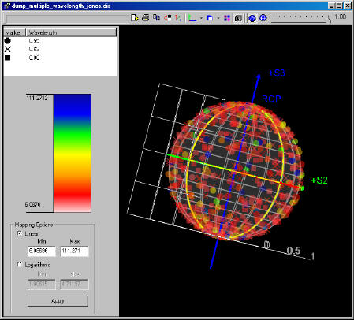

The purpose of the ASAP polarization feature enhancement is to
provide a Poincaré Sphere Visualization Tool (PSVT) via the 3D Viewer for
visualizing the polarization state of rays.

The PSVT does the following:
- Enables you to customize the
false color mapping of ray flux, using both linear and logarithmic scales.
- Creates a sphere with unit radius in the 3D Viewer graphic pane.
- Draws the sphere surface
transparently so that you can see points located inside and on the back of the
sphere.
- Includes a set of grids both
in longitudinal and latitudinal directions.
- Includes settings for
changing grid line color and thickness
- Includes controls for switching features on or off such as the
equator, poles, meridian, and parallels.
- Draws three coordinate axes
S1, S2,and S3 in red, green and blue respectively.
- Adds a label RCP to S3 axis
in blue.
- Enables you to render both
the polarization state by location on the surface of the Poincaré sphere and
flux.